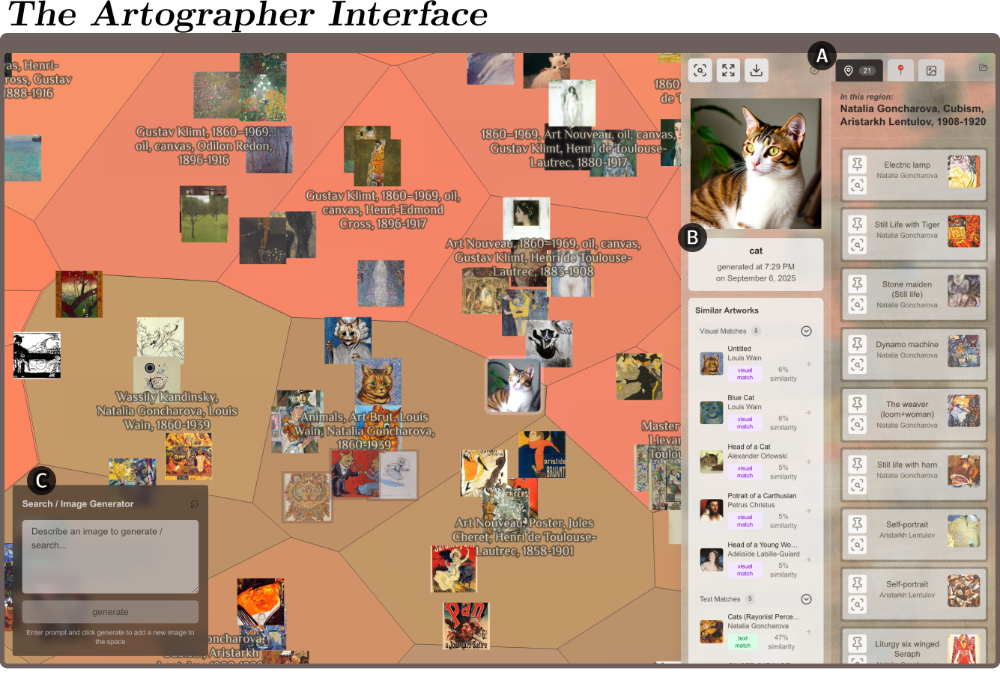

A Curatorial Interface for Art Space Exploration
In the Generative AI as Creative Probe session at the ACM Creativity & Cognition Conference (C&C 2026) in London.
Relating new art & media to previously established works is crucial in creating and engaging with art & culture... but mainstream AI interfaces & media platforms tend to obscure and extract from culture, instead of supporting meaningful engagement with it. Can we imagine new ways of designing with data to support media ecosystems where history & culture can thrive?

Artographer is an interface for exploring a curated dataset of around 16,000 historical artworks as a zoomable, similarity- clustered map, constructed from multiple embedding models’ representations of each artwork’s visual and semantic features.we should build systems that curate and present artworks with intentionality! todo make this longer lol
read our paper or come see the talk at C&C 2026, at the Generative AI as Probe session on Tuesday, July 14, 4:30–6:00 PM, in the Platform Theatre.